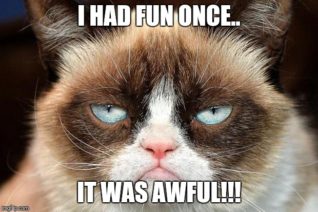

MemeHistory
The Grumpy cat
Tardar Sauce (April 4, 2012 – May 14, 2019), nicknamed Grumpy Cat, was an American Internet celebrity cat. She was known for her permanently "grumpy" facial appearance, which was caused by an underbite and feline dwarfism. She came to prominence when a photograph of her was posted on September 22, 2012, on social news website Reddit by Bryan Bundesen, the brother of her owner Tabatha Bundesen. Lolcats and parodies created from the photograph by Reddit users became viral. She was the subject of a popular Internet meme in which negative, cynical images are made from photographs of her.
Tardar Sauce was one of a litter of four kittens born to a calico mother and a blue-and-white tabby putative father at the home of her owner, Tabatha Bundesen of Morristown, Arizona. The Bundesens said that Tardar Sauce's face appeared grumpy because the feline had a form of dwarfism. Though the mother and father were described as "normal sized domestic short hair cats", Tardar Sauce was undersized and had hind legs that are "a bit different".